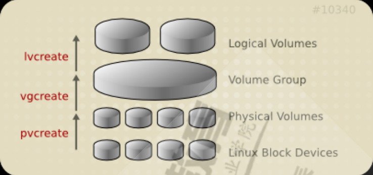
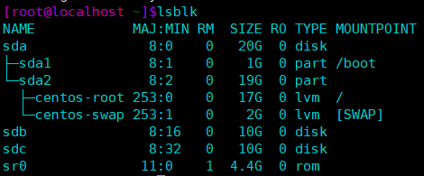
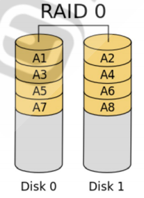
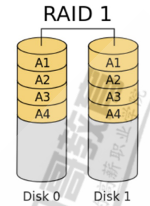
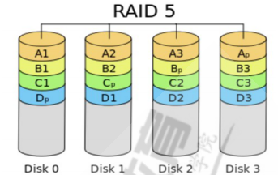
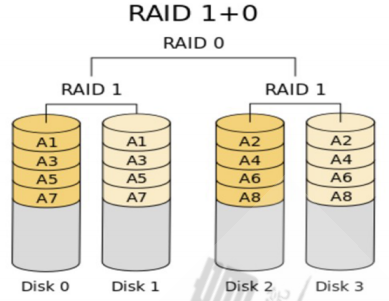
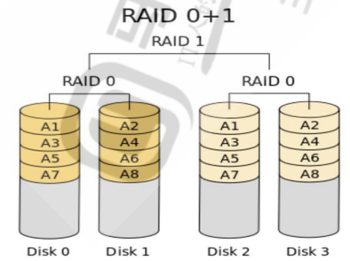

逻辑卷的创建、缩容、扩容，逻辑卷快照备份。RAID独立硬盘冗余阵列原理，RAID设备创建
逻辑卷
逻辑卷实现过程
将设备指定为物理卷
用一个或者多个物理卷来创建一个卷组，物理卷是用固定大小的物理区域（Physical Extent，
PE）来定义的
在物理卷上创建的逻辑卷， 是由物理区域（PE）组成
可以在逻辑卷上创建文件系统并挂载

逻辑卷创建
创建一个至少有两个PV组成的大小为20G的名为testvg的VG，要求PE大小为16M，而后在卷组中创建大小为5G的逻辑卷testlv;挂载至/users目录。

1
2
3
4
5
6
7
8
9
10
11
12
13
14
15
16
17
18
19
20
21
22
| [root@localhost ~]$pvcreate /dev/sdb /dev/sdc
Physical volume "/dev/sdb" successfully created.
Physical volume "/dev/sdc" successfully created.
[root@localhost ~]$vgcreate -s 16M testvg /dev/sdb /dev/sdc
Volume group "testvg" successfully created
[root@localhost ~]$lvcreate -L 5G -n testlv testvg
Logical volume "testlv" created.
[root@localhost ~]$mkfs.ext4 /dev/testvg/testlv
[root@localhost ~]$mkdir /users
[root@localhost ~]$mount /dev/testvg/testlv /users
[root@localhost ~]$lsblk
NAME MAJ:MIN RM SIZE RO TYPE MOUNTPOINT
sda 8:0 0 20G 0 disk
├─sda1 8:1 0 1G 0 part /boot
└─sda2 8:2 0 19G 0 part
├─centos-root 253:0 0 17G 0 lvm /
└─centos-swap 253:1 0 2G 0 lvm [SWAP]
sdb 8:16 0 10G 0 disk
└─testvg-testlv 253:2 0 5G 0 lvm /users
sdc 8:32 0 10G 0 disk
sr0 11:0 1 4.4G 0 rom
|
逻辑卷扩容和缩容
扩展testlv至7G，要求archlinux用户的文件不能丢失。
1
2
3
4
5
6
7
8
9
10
11
12
13
| #新建用户archlinux,要求其家目录为/users/archlinux，而后su切换至archlinux用户，复制/etc/pam.d/目录至自己的家目录。
[archlinux@localhost /root]$ll -d /users/archlinux/pam.d/
drwxr-xr-x. 2 archlinux archlinux 4096 Jun 24 21:23 /users/archlinux/pam.d/
[root@localhost ~]$lvextend -L 7G /dev/testvg/testlv
Size of logical volume testvg/testlv changed from 5.00 GiB (320 extents) to 7.00 GiB (448 extents).
Logical volume testvg/testlv successfully resized.
[root@localhost ~]$resize2fs /dev/testvg/testlv
[root@localhost ~]$lsblk
└─testvg-testlv 253:2 0 7G 0 lvm /users
#确认文件有无丢失
[root@localhost ~]$ll -d /users/archlinux/pam.d/
drwxr-xr-x. 2 archlinux archlinux 4096 Jun 24 21:23 /users/archlinux/pam.d/
|
收缩testlv至3G，要求archlinux用户的文件不能丢失
1
2
3
4
5
6
7
8
9
10
| #xfs文件系统不支持缩容，可使用xfsdump备份数据，卸载文件系统后缩容，最后再重新创建文件系统
#缩容需要取消挂载
[root@localhost ~]umount /dev/testvg/testlv
[root@localhost ~]e2fsck -f /dev/testvg/testlv
[root@localhost ~]resize2fs /dev/testvg/testlv 3G
[root@localhost ~]lvreduce -L 3G /dev/testvg/testlv
[root@localhost ~]mount /dev/testvg/testlv /users
#确认文件有无丢失
[root@localhost ~]$ll -d /users/archlinux/pam.d/
drwxr-xr-x. 2 archlinux archlinux 4096 Jun 24 21:23 /users/archlinux/pam.d/
|
快照
对testlv创建快照，并尝试基于快照备份数据，验正快照的功能
1
2
3
4
5
6
7
8
9
10
11
12
13
14
| #创建快照
[root@localhost ~]lvcreate -l 64 -s -n testlv-snapshot /dev/testvg/testlv
[root@localhost ~]mkfs.ext4 /dev/testvg/testlv-snapshot
[root@localhost ~]mkdir -p /mnt/backup
[root@localhost ~]mount -o ro,nouuid /dev/testvg/testlv-snapshot /mnt/snap
#删除文件
[root@localhost ~]$rm -rf /users/archlinux/pam.d
#恢复后快照逻辑卷将消失
[root@localhost ~]$umount /dev/testvg/testlv-snapshot
[root@localhost ~]$umount /dev/testvg/testlv
[root@localhost ~]$lvconvert --merge /dev/testvg/testlv-snapshot
[root@localhost ~]$ll -d /users/archlinux/pam.d/
drwxr-xr-x. 2 archlinux archlinux 4096 Jun 24 21:23 /users/archlinux/pam.d/
|
RAID
RAID（独立硬盘冗余阵列）把多个硬盘组成一个逻辑硬盘，操作系统将其视作一个实体硬盘。
原理
RAID0：数据分散存放在每个磁盘中，并行读写数据，因此读写速度最快，但没有容错能力，一个磁盘损坏将丢失全部数据。至少需要2个磁盘。

RAID1：相同的数据存放在每个磁盘中，并行读取数据，因此读速度上升，写速度下降，每个磁盘相当于互为备份，容错能力最高，但磁盘利用率最低。至少需要2个磁盘。

RAID5：数据分散存放在每个磁盘中，并且还有一位校验位分散存放在每个磁盘中，并行读写数据，因此读写性能上升，允许一个磁盘损坏，损坏时通过其他磁盘的数据和校验位根据算法可恢复丢失的数据。相比于RAID4校验位放置于校验盘，RAID5分散存放可防止校验盘频繁读取造成寿命下降。至少需要3个磁盘。

RAID还可以组合使用
RAID10：先由多块磁盘组成RAID1镜像组，存放同样的部分数据，再由多个RAID1磁盘组成RAID10。因为RAID0的特性，读写性能上升，由于RAID1的特性，最多允许每组镜像中损坏一个磁盘。最少需要4个磁盘。

RAID01：先由多块磁盘组成RAID0磁盘分散存放数据，再由多个存有相同数据RAID0磁盘组成RAID01。因为RAID1的特性，读速度上升，写速度将随着RAID0组的增加而降低。容错能力较高。最少需要4个磁盘。

创建RAID
创建10G的RAID1，要求CHUNK为128K，文件系统为ext4，有一个空闲盘，开机可自动挂载至/backup目录
1
2
3
4
5
6
7
8
9
10
11
| #使用mdadm工具实现软RAID
#-C: 创建模式
-n #: 使用#个块设备来创建此RAID
-l #：指明要创建的RAID的级别
-a {yes|no}：自动创建目标RAID设备的设备文件
-c CHUNK_SIZE: 指明块大小,单位k
-x #: 指明空闲盘的个数
[root@localhost ~]mdadm -C /dev/md0 -a yes -l 1 -n 3 -x 1 -c 128 /dev/sd{b,c,d}
[root@localhost ~]mkfs.ext4 /dev/md0
[root@localhost ~]vim /etc/fstab
/dev/md0 /backup ext4 defaults 0 0
|
创建一个可用空间为10G的RAID10设备，要求CHUNK为256K，文件系统为ext4，开机可自动挂载至/mydata目录
1
2
3
4
5
6
| [root@localhost ~]mdadm -C /dev/md0 -a yes -l 1 -n 2 -c 256 /dev/sd{b,c}
[root@localhost ~]mdadm -C /dev/md1 -a yes -l 1 -n 2 -c 256 /dev/sd{d,e}
[root@localhost ~]mdadm -C /dev/md2 -a yes -l 0 -n 2 -c 256 /dev/md{0,1}
[root@localhost ~]mkfs.ext4 /dev/md2
[root@localhost ~]vim /etc/fstab
/dev/md2 /mydata ext4 defaults 0 0
|